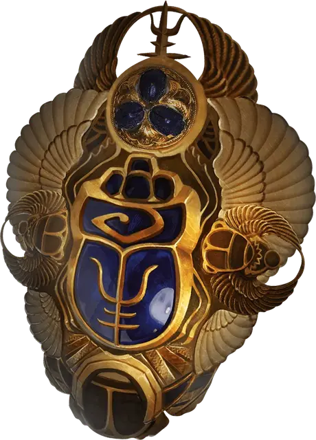

Скарабей защиты
Scarab of Protection
Чудесный предмет, легендарный (требуется настройка)

Рекомендованная стоимость 200 000 ЗМ
Этот выполненный в форме жука медальон даёт три преимущества, пока он находится у вас на теле.
Защита. Вы получаете бонус +1 к Классу Защиты.
Сохранение. Скарабей имеет 12 зарядов. Если вы проваливаете спасбросок от заклинания Некромантии или от вредоносного эффекта, исходящего от Нежити, вы можете Реакцией потратить 1 заряд и превратить провал этого спасброска в успех. Скарабей превращается в пыль и уничтожается, как только потрачен последний заряд.
Сопротивление заклинаниям. Вы совершаете с Преимуществом спасброски от заклинаний.